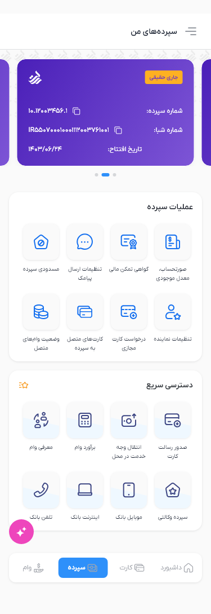

Phase 2 — Multiple deposits

Single and multiple deposit states. Shared components are reused unchanged: the deposit gradient/shadow and gray selected deposit icon intentionally differ from Figma. Safe-area spacing is included; native status/navigation controls are excluded. Development document
